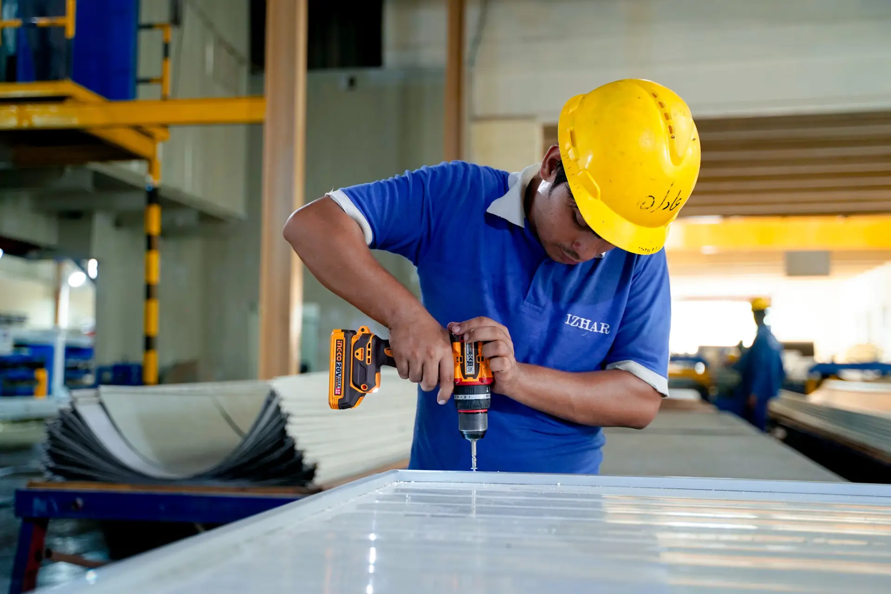
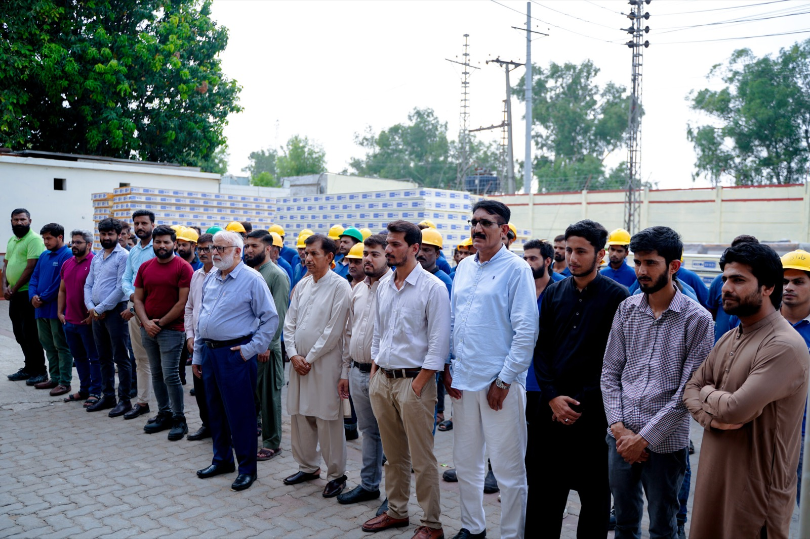

HAC Agri, Phool Nagar — Pakistan's first commercial CA store, 3,000 MT with ammonia-glycol refrigeration
HAC Agri's 21-acre facility on Phool Nagar Bypass — approximately 60 km south of Lahore on the Multan Road belt — is the first purpose-built commercial controlled atmosphere (CA) cold store for fruit and vegetables in Pakistan. Backed by Karandaaz, DFID, and the Bill & Melinda Gates Foundation, Phase I delivers 3,000 metric tonnes of CA capacity across 20 sealed rooms of 150 MT each. Izhar Foster delivered the full cold-store scope: FireSafe PIR sealed room construction, ammonia-glycol secondary-loop refrigeration, and integration with the Fruit Control Italiana atmosphere management system. Apple shelf life extended from 3–4 months (conventional chiller) to 10–12 months (CA). A landmark for Pakistan's fruit sector.
Pakistan produces an estimated 600,000 metric tonnes of apples per year — predominantly from Swat and Dir in KPK, and from the highlands of Balochistan. Most of this volume travels to market within weeks of harvest, sold by weight at harvest-time prices. The farmer with a bumper crop cannot wait for the market; the wholesaler who knows prices will rise in January cannot access fruit that was picked in September. The missing link in Pakistan's apple value chain — and, more broadly, in its horticultural sector — is controlled atmosphere cold storage: facilities that can preserve fruit for 10–12 months without quality loss, allowing supply to be timed to demand rather than dictated by biology.
HAC Agri's facility at Phool Nagar is Pakistan's answer to that missing link. It is, to Izhar Foster's knowledge, the first purpose-built commercial CA cold store for fruit and vegetables in Pakistan at this scale — and it represents a genuine inflection point in the country's post-harvest infrastructure. Izhar Foster designed and installed the cold-store envelope and the ammonia-glycol refrigeration plant that makes the CA environment possible. The atmosphere management system — Fruit Control Italiana GAC 5000 analyser, Swingtherm-BS CO₂ scrubbers, Intelligem IG controller, and PSA nitrogen generator — sits on top of the refrigeration and construction foundation we provided. This is a case study in how cold-store engineering enables an agricultural transformation.
Why CA storage is radically different from conventional cold storage
Conventional cold storage slows the metabolic and microbial processes that degrade fresh produce by reducing temperature. An apple at +1°C respires slowly, loses moisture slowly, and resists bacterial and fungal decay for 3–4 months before quality begins to noticeably decline. CA storage goes further: it simultaneously reduces temperature AND modifies the gaseous environment of the sealed room, reducing oxygen from atmospheric 21% to 2–3%, elevating CO₂ from atmospheric 0.04% to 1–5%, and filling the balance with nitrogen. At these conditions, the apple's cellular respiration is suppressed to the minimum required to maintain life — and the ripening process, which depends on ethylene production and oxygen uptake, is arrested.
The practical outcome is dramatic: Pakistani apple varieties under a correctly managed CA protocol hold commercially acceptable quality for 10–12 months — three times the conventional cold storage window. A farmer who sold his crop in September for Rs 50/kg because he had nowhere to hold it is now selling the same variety in March or April for Rs 80–100/kg, because HAC Agri can time the release to the price peak. The development finance rationale of Karandaaz, DFID, and the Bill & Melinda Gates Foundation rests on this arithmetic: post-harvest loss reduction, farmer income improvement, and market price smoothing — all from an investment in insulated rooms and controlled gas atmospheres.



Why ammonia-glycol secondary loop — not direct expansion — inside CA rooms
The decision to use a secondary-loop refrigeration system is the central engineering choice that distinguishes a CA store from a conventional cold store. In a standard cold store, refrigerant (ammonia, HFC, or CO₂) circulates directly to evaporator coils inside the room — this is the "direct expansion" or "flooded evaporator" design that is standard in most industrial cold stores Izhar Foster delivers. It is efficient, well-understood, and straightforward to maintain.
CA rooms cannot use this design. The rooms are sealed. The controlled atmosphere is the product. Occupancy during operation is impossible without SCBA (self-contained breathing apparatus), and even a minor refrigerant leak in a sealed low-oxygen environment is immediately a life-safety emergency. Ammonia at CA room concentrations — the IDLH (immediately dangerous to life or health) level is 300 ppm — in a room already at 2–3% oxygen is an outcome Izhar Foster will not engineer toward.
The ammonia-glycol secondary loop keeps ammonia entirely within the mechanical room. The primary circuit cools propylene glycol-water solution in a plate heat exchanger; the glycol then circulates to cooling coils inside each sealed CA room. Glycol is non-flammable, non-toxic at food-grade concentrations, and a leak inside a CA room is a temperature event, not a chemical hazard. The glycol loop also delivers a secondary engineering benefit: its thermal mass eliminates the temperature hunt-and-surge that direct expansion evaporators inherently exhibit. The glycol buffer holds room temperature to ±0.1°C. For CA storage at +1 to +4°C, that stability matters: a temperature of +4.5°C increases apple respiration rate measurably and begins to erode the shelf-life benefit that the CA atmosphere is delivering. Precision in the glycol circuit is the precision in the product.
The atmosphere control system — what Izhar Foster integrates against
The CA atmosphere management system at HAC Agri — Fruit Control Italiana GAC 5000 analyser, Swingtherm-BS CO₂ scrubbers, Intelligem IG control, and PSA nitrogen generator — is the intelligence layer of the facility. Izhar Foster's contribution is the physical infrastructure that this intelligence layer operates within: the sealed rooms, the glycol cooling system that holds temperature, and the mechanical room services that power and supply the atmosphere equipment.
The GAC 5000 is a gas analyser that continuously monitors O₂ and CO₂ concentration in each room. It uses paramagnetic measurement for O₂ (accurate to ±0.02%) and infrared for CO₂ (accurate to ±0.1%). When oxygen drifts above the set-point — because fruit respiration continues, albeit slowly, consuming O₂ — the nitrogen generator injects N₂ to displace it. When CO₂ rises above the set-point from fruit respiration, the Swingtherm-BS CO₂ scrubber — a potassium hydroxide scrubber that absorbs CO₂ and releases it to atmosphere — draws room air through the caustic solution to reduce CO₂ concentration. The Intelligem IG controller manages the timing and sequencing of all these interventions across all 20 rooms simultaneously, logging the complete atmosphere history for each room.
The PSA nitrogen generator at Phool Nagar eliminates the dependence on liquid nitrogen deliveries — critical for a facility 60 km south of Lahore on a road where tanker reliability is seasonal. The PSA unit takes ambient air and separates nitrogen using zeolite molecular sieves, delivering 97–99% pure N₂ at the flow rate required for room purge and top-up. It runs on standard electrical supply with no chemical consumables and no logistics tail.
Sealed room construction — where PIR meets CA-grade airtightness
A CA room is not simply a cold store with a sealed door. The entire room envelope — walls, ceiling, floor junction, door, penetrations, and service entries — must achieve and maintain airtightness over a 12-month crop storage cycle. A CA room that leaks — even slowly — bleeds the expensive nitrogen-enriched atmosphere, raises oxygen concentration, and gradually loses the shelf-life advantage that justifies the investment. Izhar Foster's CA room construction uses FireSafe PIR panels with full vapour-barrier integrity on all six faces, with continuous butyl-rubber or polyurethane sealant at every panel joint and all penetrations. Pipe and electrical entries use custom pressure-equalisation penetration sleeves. The room door is a CA-grade airtight swing door with multi-layer inflatable gasket sealing — a fundamentally different assembly from the sliding insulated doors used in standard cold stores.
Room airtightness is pressure-tested before commissioning: each CA room is pressurised to 400 Pa above atmospheric and the pressure half-decay time is measured. For a well-constructed CA room, the half-decay time should exceed 60 seconds (ideally 90–120 seconds); a room that fails this test has a construction defect that must be located and sealed before loading. Izhar Foster treats CA room airtightness testing as a mandatory commissioning milestone — not an optional quality check — because the economic case for the entire facility rests on it.
What this project means for Pakistan's cold-chain infrastructure
The HAC Agri Phool Nagar facility is not merely a cold store for one company's apples. It is the reference installation that demonstrates, at commercial scale, that CA cold storage is viable in Pakistan — with Pakistan climate conditions, Pakistan power infrastructure, and Pakistan labour and maintenance realities. Every subsequent CA store developer in Pakistan — and several are planned, from Gilgit-Baltistan to AJK — can point to Phool Nagar as proof of concept. Izhar Foster's involvement establishes that CA-grade construction and ammonia-glycol refrigeration integration is available from a Pakistani manufacturer with 2,100+ installed projects and 277,460 sqft of manufacturing capacity in Lahore.
The 9,000 MT planned total capacity at the Phool Nagar site — if fully realised — would represent a meaningful fraction of the CA cold-store capacity Pakistan needs to capture price premiums on its apple production. At current Pakistan apple production levels, even 30% of the crop passing through CA storage before sale would represent a transformation in farm-gate income and post-harvest loss reduction.
If you are planning a CA store for apples, pears, or other high-value horticultural produce in Pakistan, the engineering is more complex than a conventional cold store and the supplier selection matters more. Read about Izhar Foster's CA store capability, or request a consultation with our engineers. We will assess your site, crop, and capacity requirements and provide a full turnkey concept — from sealed PIR rooms to refrigeration plant to atmosphere control system interface. Also read: CA stores — Pakistan's agricultural game-changer.
Specification context — CA store, Phool Nagar
| Parameter | HAC Agri Phase I specification |
|---|---|
| Total Phase I capacity | 3,000 MT (20 rooms × 150 MT each) |
| Planned total site capacity | 9,000 MT (phased) |
| Room temperature | +1°C to +4°C (variety-specific) |
| Temperature stability (glycol) | ±0.1°C |
| O₂ set-point | 2–3% |
| CO₂ set-point | 1–5% (variety-specific) |
| Humidity | >90% RH |
| Refrigeration | Ammonia-glycol secondary loop |
| Atmosphere control | Fruit Control Italiana GAC 5000 + Swingtherm-BS + Intelligem IG |
| Nitrogen source | On-site PSA generator |
| Airtightness standard | 400 Pa pressure test; half-decay >60 s |
| Apple shelf life achieved | 10–12 months (vs 3–4 months conventional) |
CA store engineering — questions from agri-cold-chain buyers.
Detailed technical answers for agri-cold-chain operators and developers planning a controlled atmosphere store in Pakistan.
What is controlled atmosphere (CA) cold storage and how does it differ from conventional cold storage?
Controlled atmosphere (CA) cold storage goes beyond conventional chiller cold storage in two ways. Conventional cold storage reduces temperature to slow metabolic activity and microbial growth. CA storage also modifies the room atmosphere — reducing oxygen (typically to 2–3%), elevating CO₂ (1–5%), and raising nitrogen to balance — in a sealed room. The combined effect of low temperature and modified atmosphere dramatically extends the shelf life of respiring produce. For apples, conventional chiller cold storage gives 3–4 months of shelf life; CA storage at +1 to +4°C with O₂ at 2–3% and CO₂ at 1–5% extends this to 10–12 months. The trade-off is significantly higher capital cost and much more complex commissioning and operation. CA is appropriate for high-value crops — apples, pears, kiwi, some exotics — where the extended shelf life translates into real market price advantage.
Why does CA storage use an ammonia-glycol secondary loop rather than direct ammonia in the rooms?
CA rooms must be sealed — the controlled atmosphere is the fundamental product of the system. Any direct expansion refrigerant system running ammonia pipes through sealed CA rooms creates an unacceptable safety risk: a refrigerant leak inside a sealed, low-oxygen room is a life-safety emergency. The ammonia-glycol secondary loop keeps ammonia entirely in the mechanical room: the primary ammonia circuit cools a glycol secondary fluid in a plate heat exchanger; the glycol circulates to coils inside each CA room. A glycol leak in a CA room is a temperature event; an ammonia leak is a chemical hazard. The glycol loop also provides superior temperature stability — holding room temperature to ±0.1°C rather than the ±0.5–1°C of a typical DX system — which matters enormously for shelf-life consistency at +1 to +4°C.
What atmosphere parameters does a CA store for apples in Pakistan use?
For Pakistani apple varieties, a standard CA protocol targets: O₂ 2–3% (atmospheric 21%); CO₂ 1–5% (atmospheric 0.04%); N₂ balance (purged in using a PSA nitrogen generator); relative humidity >90% RH; temperature +1°C to +4°C. The exact set-points are variety-specific and managed by the CA controller (Intelligem IG at HAC Agri). Oxygen is monitored continuously by the GAC 5000 analyser; CO₂ is scrubbed using Swingtherm-BS CO₂ scrubbers when it exceeds the upper set-point. The rooms are sealed with airtight door gaskets and vapour-barrier wall construction.
How does a PSA nitrogen generator work in a CA store?
PSA stands for Pressure Swing Adsorption. In a PSA nitrogen generator, ambient air is compressed and passed over zeolite molecular sieve material at high pressure. The zeolite preferentially adsorbs oxygen, allowing nitrogen to pass through at purities of 95–99.9%. Two adsorber vessels alternate between adsorption and regeneration to produce a continuous nitrogen stream. In a CA store, this nitrogen purges oxygen from rooms at commissioning and tops up nitrogen after door openings or atmosphere leakage. PSA generators eliminate the need for liquid nitrogen deliveries — critical for a remote rural facility like Phool Nagar — and allow precise nitrogen on-demand.
What did the Karandaaz and Gates Foundation backing mean for this project?
Karandaaz Pakistan — backed by UK FCDO and the Bill & Melinda Gates Foundation — provided blended finance for the HAC Agri CA store. The development finance rationale is straightforward: Pakistan loses 35–40% of its horticultural production post-harvest. A CA store extending apple shelf life from 3–4 months to 10–12 months allows HAC Agri to procure directly from farms at harvest and sell into the market when prices peak — improving farmer income and reducing post-harvest waste. The development finance acts as a catalytic instrument, reducing HAC Agri's cost of capital below the commercial rate to make the business case viable at current Pakistan apple price levels.
How many CA rooms are at the HAC Agri Phool Nagar facility and what is the planned total capacity?
Phase I comprises 20 CA rooms, each with a net capacity of approximately 150 metric tonnes of apples, for a total Phase I capacity of 3,000 MT. The 21-acre site is designed for expansion to 9,000 MT total capacity in subsequent phases — reflecting the scale of Pakistan's apple production and the fraction that could access premium CA-stored markets. Each room operates as an independent CA cell — sealed, independently atmosphere-controlled, and independently temperature-controlled — allowing HAC Agri to operate partial rooms and store different varieties under optimised CA protocols simultaneously.
Other agri cold-chain and CA projects in Pakistan.
How HAC Agri Phool Nagar sits within Izhar Foster's portfolio of agricultural cold-chain installations.
USAID Banana Ripening
Donor-funded banana ripening and cold storage rooms for farmer cooperatives in Sindh — supporting Pakistan's banana sector through post-harvest infrastructure.
02Beverage · LahoreCoca-Cola TCCEC Lahore
High-bay drive-in pallet racking, FireSafe PIR envelope, and Bitzer ammonia refrigeration for Coca-Cola's finished-goods cold store in Lahore.
033PL · Lahore · −18°CSharaf Logistics Lahore
50-ft high-bay 3PL freezer on Multan Road — wind-loaded PIR envelope, top-tie ammonia evaporators, rack-integrated structure at 15.2 m clear height.
How much would your CA store cost?
Model a CA store in a Pakistan city — number of rooms, capacity, and location — for an indicative ±20% PKR cost band including PIR sealed rooms and ammonia-glycol refrigeration. Engineer validation required before quoting.
Open the rough estimator →